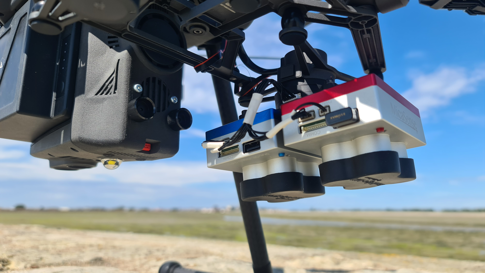
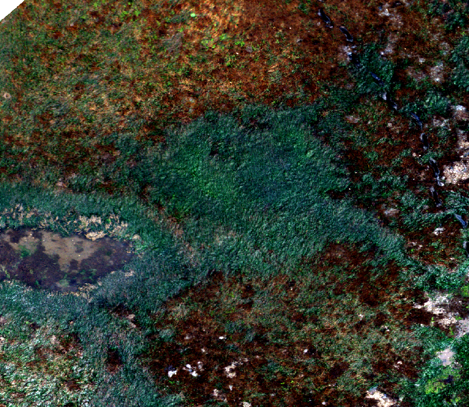

Multiscale remote sensing of intertidal vegetation of European coasts in response to natural and anthropogenic pressures.
Start of the thesis in January 2022
Follow-up meeting
15th of June 2023
Simon Oiry
Phd student
Supervisor : Laurent Barillé Co-supervisor : Pierre Gernez


Coastal zone : areas under anthropogenic pressure
1 2 3 4 5 6
1


- Densely populated areas:
- 4% of the french territory
- 10% of the french population
- Many economic activities:
- Many anthropogenic pressures:
- Shoreline changes and Coastal Erosion
- Modification of hydrological properties
- Input of nutrients or hazardous substances
Quillien et al. (2015)
- Introduction of energy (Noises, Temperature, vibration…)
- Non-indigenous species introduction
- Extraction of species by commercial fishing
- …
Intertidal habitats
1 2 3 4 5 6
2


Aveiro Lagoon, Portugal

- Nurserey and habitat of many species

- Soft Bottom and Hard Bottom
- Multiple classes of vegetation
- Pheophyceae, Brown algae
- Pheophyceae, Brown algae
- Chloropyceae, Green algae
- Pheophyceae, Brown algae
- Chloropyceae, Green algae
- Magnoliopsida, Seagrasses
- Pheophyceae, Brown algae
- Chloropyceae, Green algae
- Magnoliopsida, Seagrasses
- Bracilariophyceae, Microphytobenthos
- Protection against erosion
- Carbon fixation
Improve the protection
- Water Framework Directive (2001)
- Marine Strategy Framework Directive (2008)
Good Knowledge of soft bottom intertidal habitats
How to monitor this ecosystem ?
1 2 3 4 5 6
3
- in situ Survey

How to monitor this ecosystem ?
1 2 3 4 5 6
3


- in situ Survey
– Time-consuming
– Hard to access
– Expensive
– Low extent and temporal resolution
- Remote Sensing Survey
– Cost effective
– Good coverage/Time ratio
Papathanasopoulou, E., Simis, S., Alikas, K., Ansper, A., Anttila, S., Jenni, A., Barillé, A.-L., Barillé, L., Brando, V., Bresciani, M., Bučas, M., Gernez, P., Giardino, C., Harin, N., Hommersom, A., Kangro, K., Kauppila, P., Koponen, S., Laanen, M., … Zoffoli, M. L. (2019). Satellite-assisted monitoring of water quality to support the implementation of the Water Framework Directive. In EOMORES white paper. https://doi.org/10.5281/zenodo.3463051
Muller-Karger et al. (2018)

- Standardized measurements or indicators to monitor biodiversity
- Standardized measurements or indicators to monitor biodiversity
- Key metrics to monitor and assess biodiversity changes
How to monitor this ecosystem ?
1 2 3 4 5 6
3

Table adapted from Muller-Karger et al. (2018)
Objectives of the thesis
1 2 3 4 5 6
4
- Map spatial and temporal variations in plant biodiversity of intertidal zones with a focus on green macrophytes
- Map spatial and temporal variations in plant biodiversity of intertidal zones with a focus on green macrophytes
- Map spatial and temporal variations in plant biodiversity of intertidal zones with a focus on green macrophytes
- Revisit time: 3 to 5 days
- Archive since 2016
- Analyze natural and human factors responsible for changes.


Sea Surface Temperature
Marine Heat Wave
River Discharge
Discriminate green macrophytes using remote sensing
1 2 3 4 5 6
6

Hyperspectral spectroradiometer
Sentinel-2 constellation
4 spectral bands
Sentinel-2 10m
Hyperspectral spectroradiometer
A total of 332 spectra
Prisma
Prisma
56 spectral bands
From 400 nm to 900 nm
Drone’s camera
Micasense MX Dual
10 spectral bands
From 444 nm to 840 nm
Pleiades
Pleiades
4 spectral bands
From 430 nm to 950 nm
Sentinel-2 20m
Sentinel-2
8 spectral bands
From 492 nm to 864 nm

Drone Mapping: Drone Specs
1 2 3 4 5 6
9


Drone Mapping: Classified maps
1 2 3 4 5 6
11
Chlorophyceae
Microphytobenthos

Magnoliopsida
Rodophyceae
Xanthophyceae
Magnoliopsida
Rodophyceae

Drone Mapping: Validation
1 2 3 4 5 6
12

Drone Mapping: Variable Importance
1 2 3 4 5 6
14

Accuracy = a
Accuracy = a ± b
Drone Mapping: From 8 mm to 80 mm
1 2 3 4 5 6
15
120 m Flight
80 mm pixel Size
12 m Flight
8 mm pixel Size
- Magnoliopsida ?
- Rodophyceae ?
- Chlorophyceae ?
754689 80 mm pixels
- Class of the 80 mm pixels
- Proportion of Class of the 8mm flight

Phenology of seagrass using Sentinel-2
1 2 3 4 5 6
16


Additional Works: March 2023
1 2 3 4 5 6
20


Lectures and Praticals
1 2 3 4 5 6
21
- September 2022:
- Fieldwork with Master 2 students in the Gulf of Morbihan : 1 day
- September 2022:
- Fieldwork with Master 2 students in the Gulf of Morbihan : 1 day
- Introduction to remote Sensing to Master 2 students: 8h
- September 2022:
- Fieldwork with Master 2 students in the Gulf of Morbihan : 1 day
- Introduction to remote Sensing to Master 2 students: 8h
- Fieldwork with Master 2 students in Bourgneuf Bay : 1 day
- September 2022:
- Fieldwork with Master 2 students in the Gulf of Morbihan : 1 day
- Introduction to remote Sensing to Master 2 students: 8h
- Fieldwork with Master 2 students in Bourgneuf Bay : 1 day
- December 2022:
- Workshop in Indonesia, Introduction to remote Sensing : 2 days
- September 2022:
- Fieldwork with Master 2 students in the Gulf of Morbihan : 1 day
- Introduction to remote Sensing to Master 2 students: 8h
- Fieldwork with Master 2 students in Bourgneuf Bay : 1 day
- December 2022:
- Workshop in Indonesia, Introduction to remote Sensing : 2 days
- March 2023:
- Lecture in quantitative ecology to 3rd year students: 1.5h
- September 2022:
- Fieldwork with Master 2 students in the Gulf of Morbihan : 1 day
- Introduction to remote Sensing to Master 2 students: 8h
- Fieldwork with Master 2 students in Bourgneuf Bay : 1 day
- December 2022:
- Workshop in Indonesia, Introduction to remote Sensing : 2 days
- March 2023:
- Lecture in quantitative ecology to 3rd year students: 1.5h
- April to may 2023:
- Praticals in quantitative ecology to 3rd year students: 24h
- September 2022:
- Fieldwork with Master 2 students in the Gulf of Morbihan : 1 day
- Introduction to remote Sensing to Master 2 students: 8h
- Fieldwork with Master 2 students in Bourgneuf Bay : 1 day
- December 2022:
- Workshop in Indonesia, Introduction to remote Sensing : 2 days
- March 2023:
- Lecture in quantitative ecology to 3rd year students: 1.5h
- April to may 2023:
- Praticals in quantitative ecology to 3rd year students: 24h
- Fieldwork Pratical with 3rd year students: 3 days
Conclusion: List of paper published since January 2022
1 2 3 4 5 6
23

- Drone mapping of intertidal soft bottom vegetation across 10 study sites and 2 countries
Simon Oiry, Bede Ffinian Rowe Davies, Ana Sousa, Philippe Rosa, Pierre Gernez, Laurent Barillé
- Spatio-temporal variability of intertidal seagrass meadow across a 23° latitudinal gradient: a study of 12 sites
Bede Ffinian Rowe Davies, Simon Oiry, Ana Sousa, Philippe Rosa, Pierre Gernez, Laurent Barillé …
The End
Thanks you for listening